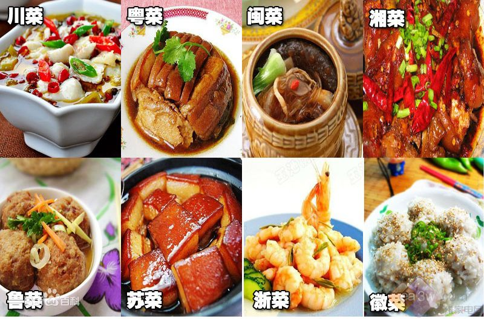

国家的历史有长有短，疆域有大有小，实力有强有弱，人口有多有少，民族构成、宗教信仰、政权性质和经济结构也有差异，故而各国的饮食文化是不一样的。
从严格看，中国饮食文化绵延上万年(湖南陶器和水稻种的发现），分为生食、熟食、自然烹饪、科学烹饪4个发展阶段，推出6万多种传统菜点、2万多种工业食品、五光十色的筵宴和流光溢彩的风味流派，获得“烹饪王国”的美誉。
从内涵上看，中国饮食文化涉及到食源的开发与利用、食具的运用与创新、食品的生产与消费、餐饮的服务与接待、餐饮业与食品业的经营与管理，以及饮食与国泰民安、饮食与文学艺术、饮食与人生境界的关系等，深厚广博。
从外延看，中国饮食文化可以从时代与技法、地域与经济、民族与宗教、食品与食具、消费与层次、民俗与功能等多种角度进行分类，展示出不同的文化品味，体现出不同的使用价值，异彩纷呈。
中国的菜系种类繁多，彰显着中国饮食文化的多样性，中国著名的菜系有八大类，分别是川菜，粤菜，闽菜，鲁菜，湘菜，苏菜，徽菜，浙菜。
| 名称 | 地区 | 口味 |
|---|---|---|
| 鲁菜 | 山东 | 清香、鲜嫩、味醇 | 湘菜 | 湖南 | 酸辣、咸香、浓鲜 | 浙菜 | 浙江 | 清鲜，淡而不薄，强调原味 |